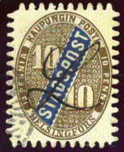
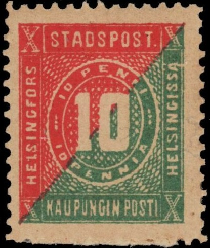
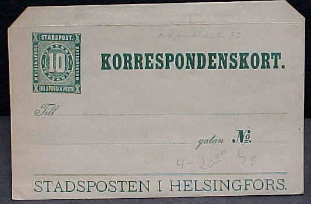

Reprint or forgery?
Note: on my website many of the
pictures can not be seen! They are of course present in the
catalogue;
contact me if you want to purchase the catalogue.
Literature: "Finnland III, Helsingfors Stadtpost Tammerfors Lokalpost Ausgabe 1923' by the Helsingfors Frimarkssamlare-forening (in German), also available at: http://personal.inet.fi/yritys/porssitieto/stadspost/stadspost1.htm.


10 p green and red 10 p brown and blue (1868)
Note the very typical perforation of these stamps, the so-called serpentine perforation, imperforate stamps are known to exist. In 1878 reprints were made with normal perforation (12 1/2). The 10 p has an 'L' shaped obliteration (handwritten), other manual cancels were used, also a horseshoe cancel (for picture, see 1871 issue, there even exist two types of this horseshoe cancel).
Reprint or forgery?
Fournier has offered forgeries of the Helsingfors stamps, the following stamps are forgeries, I suspect it to be these forgeries. I don't think he made these forgeries himself, since he offers them as 2nd choice for 0.50 Swiss Francs both (maybe these are actually Spiro forgeries?). A picture of this can be seen in 'The Fournier Album of Philatelic Forgeries' by Ragatz. It can be recognized by the number of half-circles on the 'STADSPOST' label; there are only 13 circles in this forgery (the genuine stamp should have 16):
Note the strange dot cancel. Both values were forged. I've also seen both values with a 'HELSINGFORS' two ring cancel (with no dates).

Page from a Fournier Album.

And another page from a Fournier Album.
Another forgery of this issue exists with 18 half-circles on the 'STADSPOST' label (instead of 16) and with 'STADSPOST' thinner. Only the brown and blue stamp exist of this forgery, (always?) unused.
Stamp with cancel '8' in a pattern of lines are forged cancels (probably only found on reprints).
I've seen a commemorative minisheet 'reprint' in a block of four 10 p brown and blue stamps for the SF Helsinki 1983 exhibition.

(Circular cancel and horseshoe cancel)
10 p red and green
This issue exist perforated with the snake-like perforation or perforated 12 1/2 (1875). Reprints were made where the two halfs of the stamp are not fitting well into each other. The second stamp has a circular cancel, the third a horseshoe cancel. Circular cancels were introduced in 1881.

I presume this is such a reprint (or even worse a forgery....)

10 p green and red
10 p brown

5 p brown and gold 10 p brown, blue and gold

Specialists distinghuish several varieties of this postal stationery.
(Sorry, no picture available yet)
10 p blue, brown and gold
Literature: "Finnland III, Helsingfors Stadtpost Tammerfors Lokalpost Ausgabe 1923' by the Helsingfors Frimarkssamlare-forening (in German), also available at: http://personal.inet.fi/yritys/porssitieto/stadspost/stadspost1.htm. The stamps were introduced by the postmaster Otto Reinhold Reuter. After 1888 no more local stamps were used.
(Tammerfors, type 1)
12 p green and blue
Specialists distinguish 2 types, mainly differing in the '12' just above the shield; in type 1 the '12' is on a white background, in type 2 the '12' is situated on a lined background. Cancels that can be found are circular ones in two types: with one circle and with two circles (larger), furhermore occasionally the franco cancel 'FRKO' in a rectangle can be found.
I have also seen a 12 p red and green; postal stationery, reprint or forgery?
{kind=link}
{kind=link}